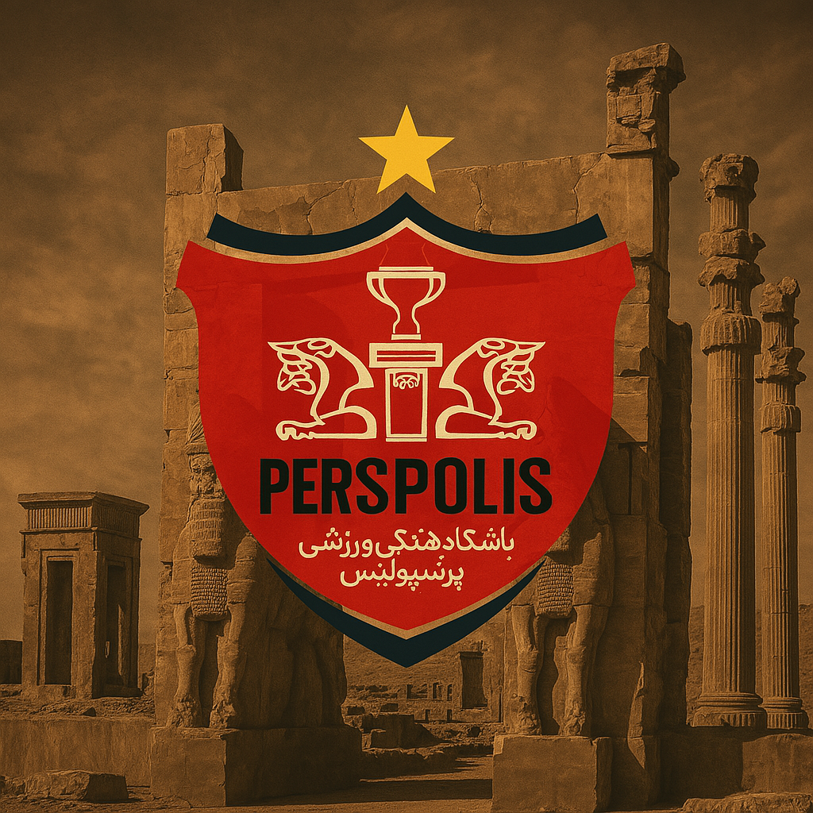

باشگاه فرهنگی ورزشی پرسپولیس در سال ۱۳۴۲ توسط علی عبده تأسیس شد. ابتدا با تیمهای بوکس و بولینگ شروع به فعالیت کرد، اما خیلی زود وارد فوتبال شد و در دهه ۵۰ به یکی از محبوبترین تیمهای ایران تبدیل شد. پرسپولیس از همان ابتدا با رنگ قرمز شناخته شد و هوادارانش لقب "ارتش سرخ" را برایش انتخاب کردند.
نام باشگاه از بنای تاریخی تخت جمشید گرفته شده که در زبان یونانی به شکل "Persepolis" ثبت شده است. تخت جمشید، پایتخت باشکوه امپراتوری هخامنشی، نماد غرور، تمدن و قدرت ایران باستان است. انتخاب این نام برای باشگاه، پیوندی میان ورزش مدرن و میراث تاریخی ایران ایجاد کرده و هویت فرهنگی تیم را تقویت کرده است.
پرسپولیس تاکنون بیش از ۱۵ بار قهرمان لیگ برتر ایران شده و چندین جام حذفی را نیز به دست آورده است. این تیم در رقابتهای آسیایی نیز خوش درخشیده و دوبار به فینال لیگ قهرمانان آسیا رسیده است. هواداران پرشور، بازیکنان با تعصب و تاریخ پرافتخار، پرسپولیس را به یکی از نمادهای فوتبال ایران تبدیل کردهاند.